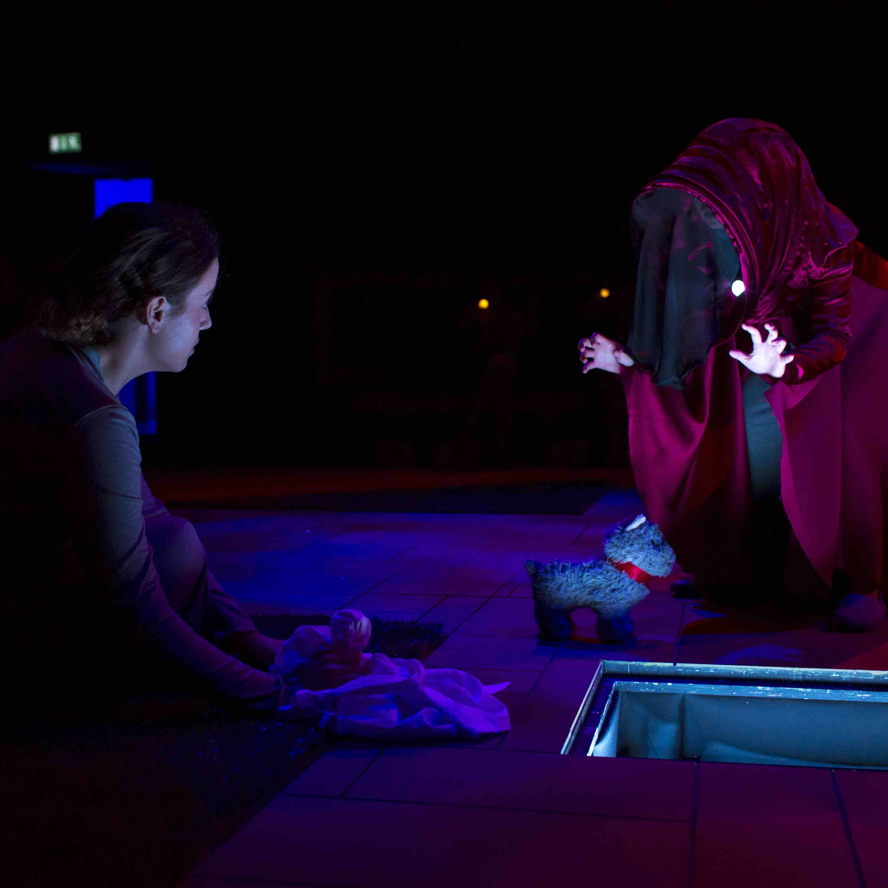
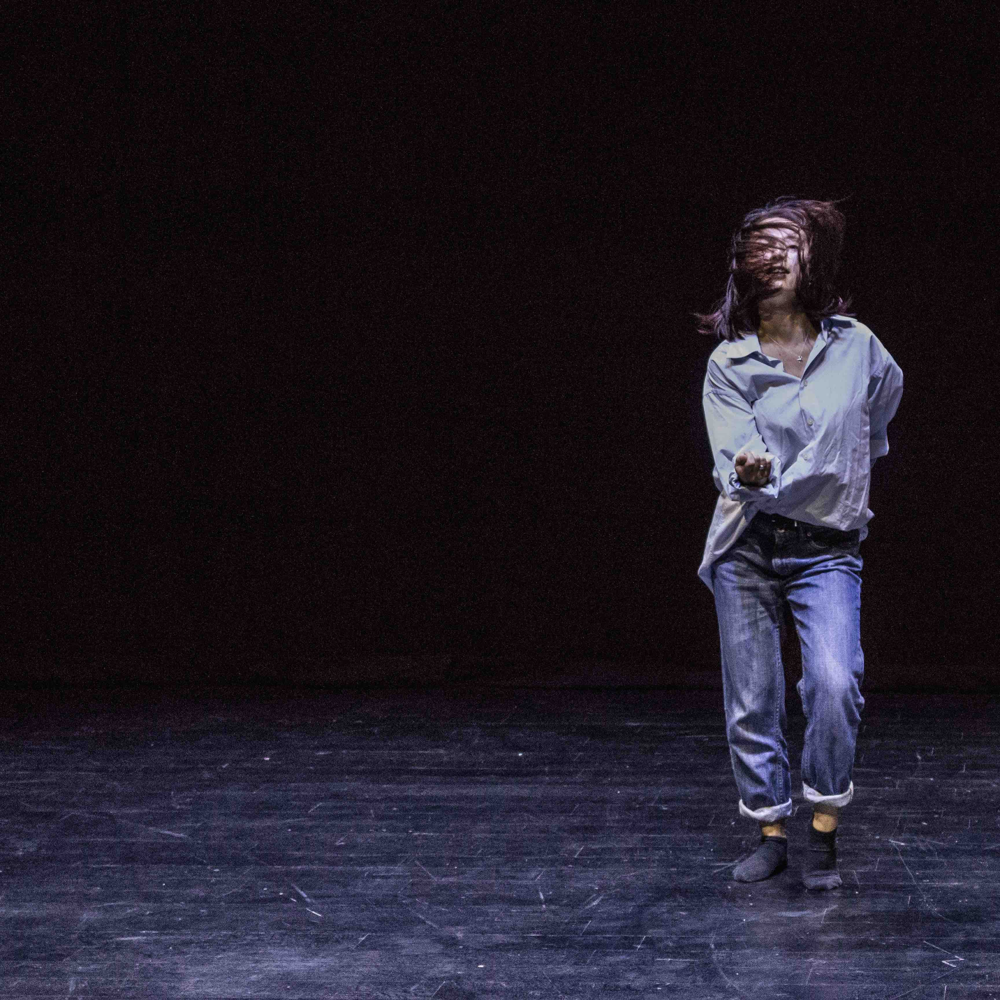
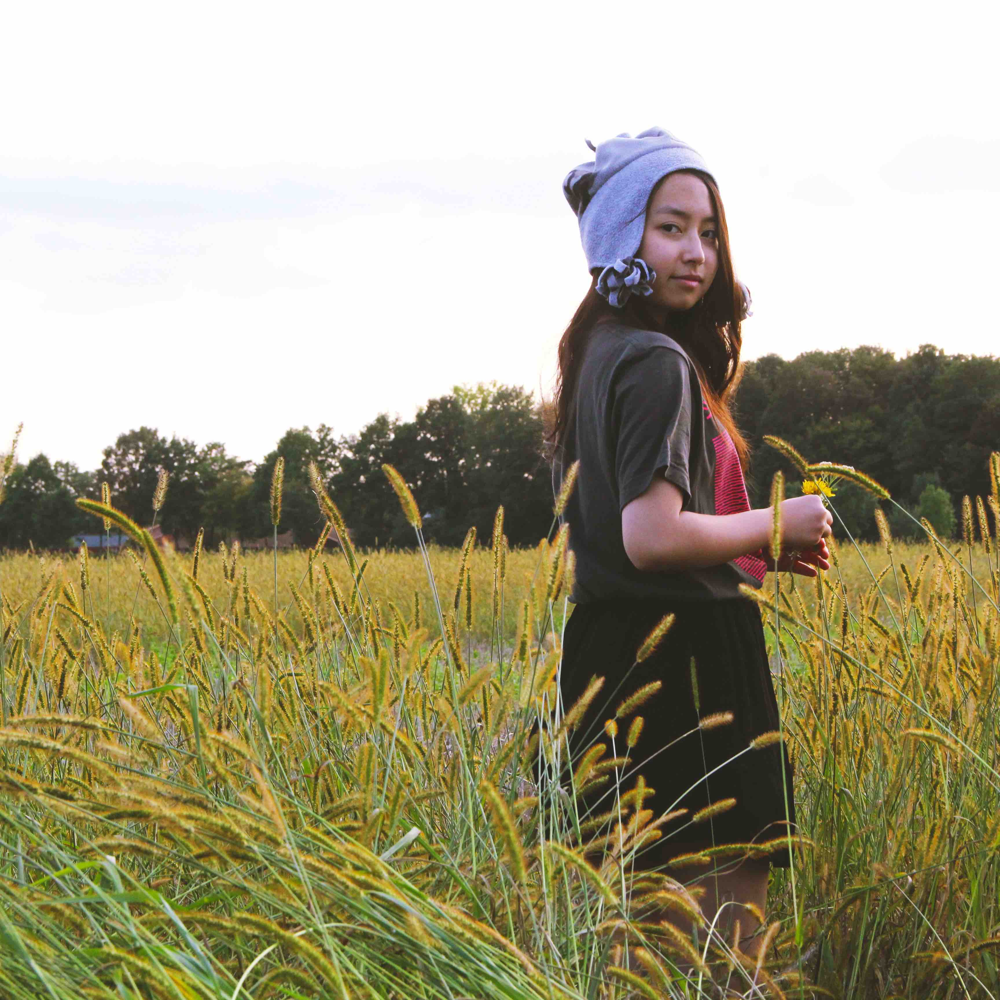
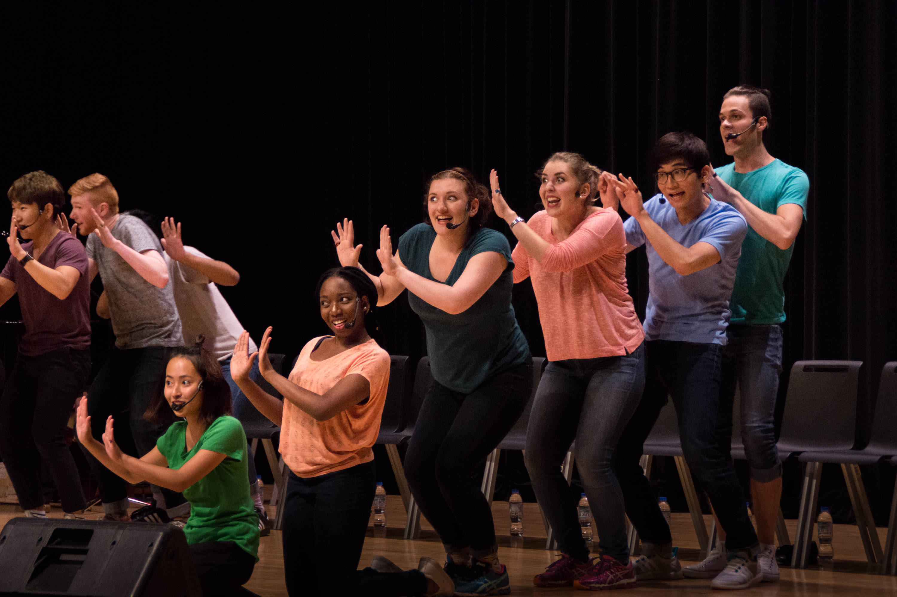
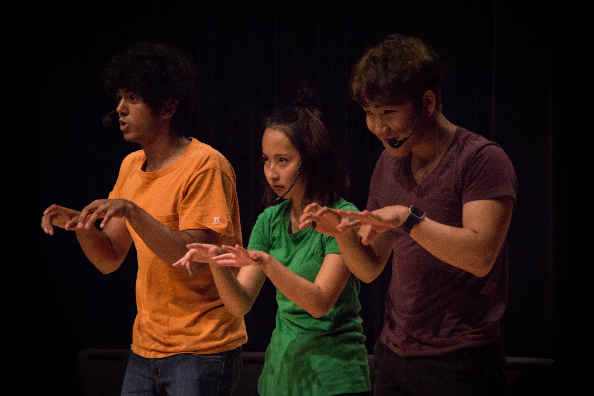
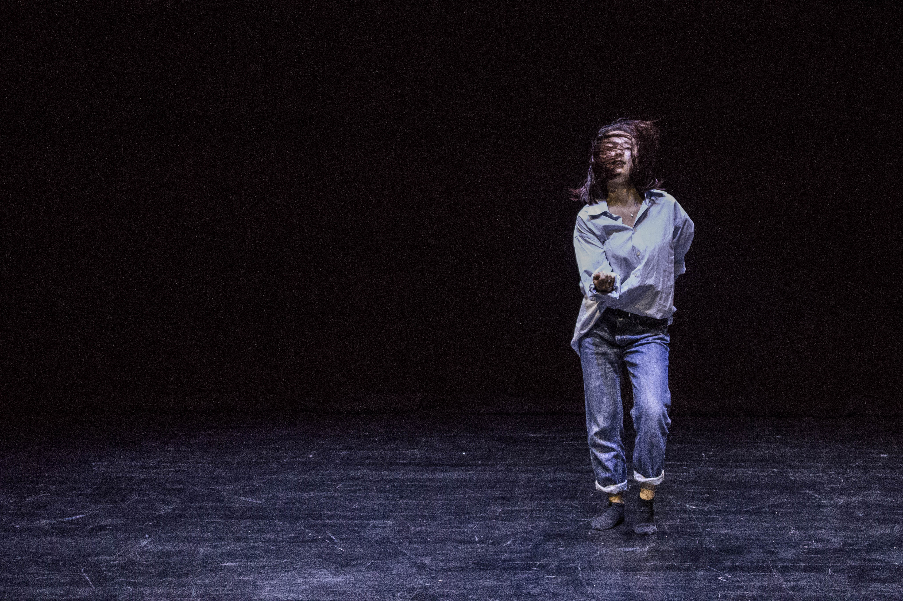
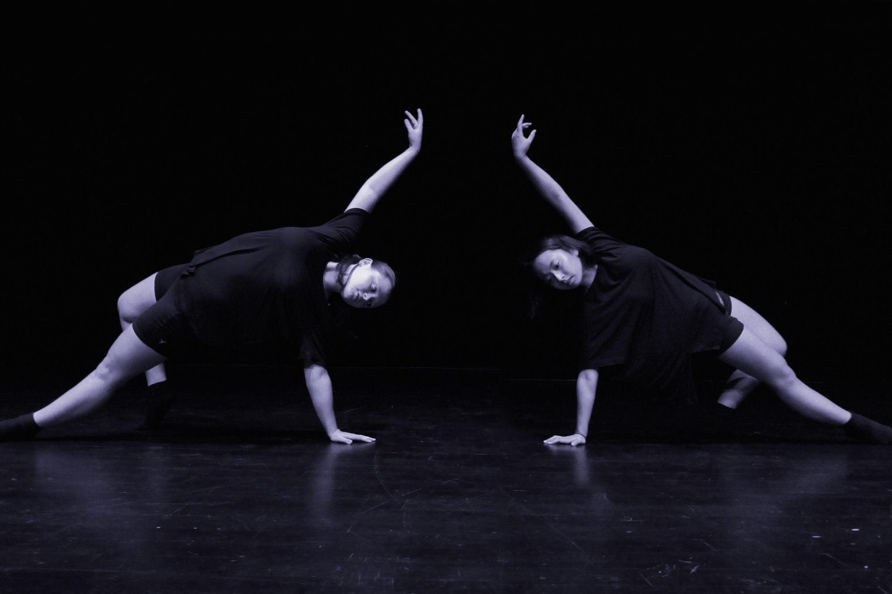

MARIKA NIKO


.jpg)



Acting
Yellow Brick Road
2016 Play
Thatrical adaptation by Tomi Tsunoda of The Wonderful Wizard of Oz, that explores contemporary conversations around climate crisis, displacement, bureaucracy, survival, and dependency.


Courtesy of The NYUAD Theater Program, Photo Credits To Koh Terai
Acting
Mujeres Cabargando En La Arena
2016 Play
Directed by Carlos Diaz Leon from Chile, this production works with three of Federico García Lorca's literature to question gender, love, identity, and desire.


Courtesy of The NYUAD Theater Program, Photo Credits To Koh Terai
Acting
in the becoming
2016 Performance
Being inspired by Butoh, this piece talks about how my body actively chooses, embodies, deforms, habitualizes, and takes on the pressure not from society but from my own self. Directed, choreographed, performed, and designed by me.


Courtesy of The NYUAD Theater Program, Photo Credits To Koh Terai
Acting
RealAD Show
2016 Musical
A comedy musical for the incoming freshman that talks about important issues surrounding college life. Written and performed by NYU Abu Dhabi students.


Photo Credits To Simon MyungGun Seo
LOUP-GAROU
2016 Play
A piece incorporating several different children's games to talk about the missing and murdered Aboriginal women of Canada.


Courtesy of The NYUAD Theater Program, Photo Credits To Gaar Adams
Bayt
2016 Installation
A conceptual immersive performance that explores trauma, childhood and intimate spaces through a hyperbolic dollhouse.
Dancing
The Creative Act: Performance, Process, Presence
2017 Performance
In collaboration with the Guggenheim Abu Dhabi and artist Susan Hefuna, we created a 20 minutes movement piece which explores the tension, energy, and connection that exists in between other human bodies.
Training
I have received formal and foundational training in classical ballet but have branched off to other dance styles such as contemporary dance, contact improvisation, hip hop, and modern dance for the most recent four years. This - wanting to dissasociate myself with classical ballet - is my own form of resistance from femininity, westernization, physical restraint, and confined ideas of beauty. My current interest lies in the philosophy and practice of Butoh.
2000-2007
The Finchley Ballet School (UK, London). Followed the Royal Academy of Dance curriculum.
2007-2011
Higo Ballet Studio (Japan, Yokohama)
2015-2016
Attitude Dance Society Ballet Classes in New York University Abu Dhabi (UAE, Abu Dhabi)
2016
Peridance Capezio Dance Studio Contemporary Classes (US, New York)
2017
Kawai Kiori's Contact Improvisation Classes (UAE, Abu Dhabi)


Photo Credits To Motoi Oyane and Jose A. Varias
Film Acting
Truth Or Dare
2015 Film
A short film about a girl who seeks for recognition from others.
Fall And Soar
2015 Film
A short film about a dancer who finds love towards dance through the appearance of an angel.
Wildflower
2014 Film
A short film about adapting to new environments. Directed by Kamau Wainaina.